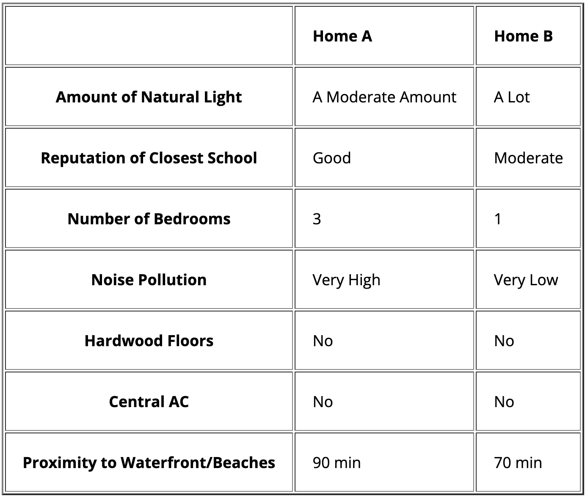
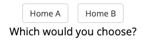
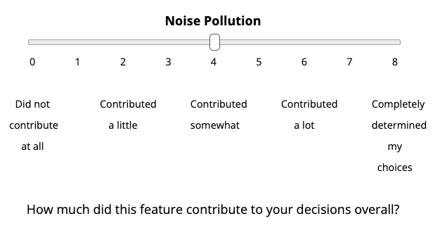
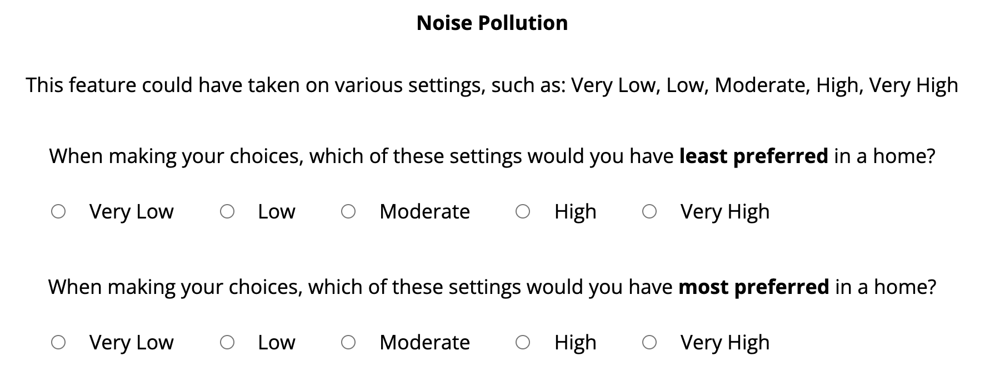

<!doctype HTML>
<html>
<head>
	<title>Research Study</title>
	<script src="https://ajax.googleapis.com/ajax/libs/jquery/2.1.4/jquery.min.js"></script>
	<link rel="stylesheet" href="https://ajax.googleapis.com/ajax/libs/jqueryui/1.11.4/themes/smoothness/jquery-ui.css">
	<script src="https://ajax.googleapis.com/ajax/libs/jqueryui/1.11.4/jquery-ui.min.js"></script>
	<script src="https://cdnjs.cloudflare.com/ajax/libs/underscore.js/1.8.3/underscore-min.js"></script>
	<script src="jspsych/jspsych.js"></script>
    <script src="jspsych/plugins/jspsych-call-function.js"></script>
    <script src="jspsych/plugins/jspsych-html-keyboard-response.js"></script>
    <script src="jspsych/plugins/jspsych-html-button-response.js"></script>
    <script src="jspsych/plugins/jspsych-html-slider-response.js"></script>
    <script src='jspsych/plugins/jspsych-multiple-slider.js'></script>
    <script src='jspsych/plugins/jspsych-survey-likert.js'></script>
    <script src='jspsych/plugins/jspsych-instructions.js'></script>
    <script src='jspsych/plugins/jspsych-survey-text.js'></script>
    <script src='jspsych/plugins/jspsych-external-html.js'></script>
    <script src='jspsych/plugins/jspsych-maxdiff.js'></script>
    <script src='jspsych/plugins/jspsych-html-button-response.js'></script>
    <script src='jspsych/plugins/jspsych-html-button-response-machoice.js'></script>
    <!--<script src='jspsych/plugins/jspsych-image-button-response.js'></script>-->
    <link href="jspsych/css/jspsych.css" rel="stylesheet" type="text/css">
    <script src="utilities.js"></script>
    <style>
	td, th {padding: 20px;}
	.big {font-size: 40px;}
	.med {font-size: 24px;}
	</style>
</head>
<body>
</body>
<script>

// ***Setting Up the Experiment***

// Meta-var's
var turk_code = "JSALK23";
var study_version = "ma_choice_v2_pilot2";

var study_time = 25;
var study_money = 3.60;

// var instr_reading_time = 2000; // in milliseconds
// var instructions_time = 0;

// // find the assignmentId & debugging status from the URL
var urlParams = parseURLParams(window.location.href);
var assignmentId = '';
var debug = false;
if (typeof urlParams != "undefined") {
    if (urlParams.hasOwnProperty('assignmentId')) {
        assignmentId = urlParams.assignmentId[0];
    }

    if (urlParams.hasOwnProperty('debug')) {
        debug = urlParams.debug[0];
    }
}


//added attributes to arrays-- other option is to create hashmap/dictionary
var home_attributes= ['Number of Bedrooms','Size of Garage','Amount of Crime in Neighborhood',
'Proximity to Parks','Proximity to Waterfront/Beaches',
'Proximity to Cafes/Restaurants','Noise Pollution','Reputation of Closest School',
'Amount of Natural Light','Age of Building','Washer/Dryer','Size of Yard','Fireplace',
'Central AC','Climate of Area','Hardwood Floors','Freshly Painted Exterior','Size of Home'];
var yn =['No','Yes'];
var size = ['None', 'Small', 'Medium', 'Large', 'Very Large']; // yard, garage
var amount = ['Very Low', 'Low', 'Moderate', 'High', 'Very High']; // pollution, crime
var amount2 = ['Very Little', 'A Little', 'A Moderate Amount', 'A Lot']; // light
var prox1 = ['5 min', '10 min', '15 min', '20 min', '25 min']; // parks, cafes/restaurants
var prox2 = ['10 min', '30 min', '50 min', '70 min', '90 min']; // waterfront/beaches
var age = ['Old', 'Medium', 'New'];
var goodness = ['Very Bad', 'Bad', 'Moderate', 'Good', 'Very Good']; // reputation-school, climate

var home_attributes = [
	{name: 'Number of Bedrooms', scale: null, lb: 1, ub: 5, postfix: ' bdrm'},
	{name: 'Size of Garage', scale: size},
	{name: 'Proximity to Parks', scale: prox1},
	{name: 'Proximity to Cafes/Restaurants', scale: prox1},
	{name: 'Proximity to Waterfront/Beaches', scale: prox2},
	{name: 'Noise Pollution', scale: amount},
	{name: 'Reputation of Closest School', scale: goodness},
	{name: 'Amount of Natural Light', scale: amount2},
	{name: 'Age of Building', scale: age},
	{name: 'Washer/Dryer', scale: yn},
	{name: 'Size of Yard', scale: size},
	{name: 'Fireplace', scale: yn},
	{name: 'Central AC', scale: yn},
	{name: 'Climate of Area', scale: goodness},
	{name: 'Hardwood Floors', scale: yn},
	{name: 'Freshly Painted Exterior', scale: yn},
	{name: 'Size of Home', scale: null, lb: 400, ub: 2000, postfix: ' square feet'},
];

var num_of_attributes = 7;
var num_practice_trials = 10;
var num_trials = 75;
var trial_wait_time = 7000;

if (debug) {
	num_practice_trials = 1;
	num_trials = 1;
	trial_wait_time = 1000;
}

function generateAttributeValues(cur_attributes){
	var arr = [];
	for (let j=0;j<cur_attributes.length;j++){
		cur_att = cur_attributes[j];
		if (cur_att.scale == null) {
			if (cur_att.postfix == null) {
				arr.push([cur_att.name,
					Math.floor(Math.random() * (cur_att.ub - cur_att.lb)) + cur_att.lb,
					Math.floor(Math.random() * (cur_att.ub - cur_att.lb)) + cur_att.lb]);
				} else {
						arr.push([cur_att.name,
							Math.floor(Math.random() * (cur_att.ub - cur_att.lb)) + cur_att.lb + cur_att.postfix,
							Math.floor(Math.random() * (cur_att.ub - cur_att.lb)) + cur_att.lb + cur_att.postfix]);
				}
		} else {
			arr.push([cur_att.name,
				cur_att.scale[Math.floor(Math.random() * cur_att.scale.length)],
				cur_att.scale[Math.floor(Math.random() * cur_att.scale.length)]]);
		}
	}
return arr;
}

function generateTable(arr) {
	let tbl_html = "<div align='center'><table border = 2px solid black><thead>\
	</tr><tr><th></th><td><b>Home A</b></td><td><b>Home B</b></td>";

	for (var i = 0; i < arr.length; i++) {
		tbl_html += "<tr><th>"+arr[i][0]+"</th><td>"+arr[i][1]+"</td><td>"+arr[i][2]+"</td>";
	}

	tbl_html += '</tr></table><br>';

	//return "<div align='center'><table border = 2px solid black><thead></tr><tr><th></th><td><b>Home A</b></td><td><b>Home B</b></td><tr><th>"+arr[0][0]+"</th><td>"+arr[0][1]+"</td><td>"+arr[0][2]+"</td><tr><th>"+arr[1][0]+"</th><td>"+arr[1][1]+"</td><td>"+arr[1][2]+"</td></tr><tr><th>"+arr[2][0]+"</th><td>"+arr[2][1]+"</td><td>"+arr[2][2]+"</td></tr><tr><th>"+arr[3][0]+"</th><td>"+arr[3][1]+"</td><td>"+arr[3][2]+"</td></tr><tr><th>"+arr[4][0]+"</th><td>"+arr[4][1]+"</td><td>"+arr[4][2]+"</td></tr></table>"
	return tbl_html;
}

var start_instructions = 0;

// ***Intro Blocks***

var welcome = {
	type: "html-keyboard-response",
	stimulus: "<div class='center-content'>Welcome to the experiment. Press any key to begin."
};

var get_id = {
	type: 'survey-text',
	questions: [{prompt: "<b>Prolific ID:</b>", name: "worker_id"}],
	preamble: ["Please enter your <b>Prolific ID</b> below.<br>(When you're done, press <b>'Continue'</b>)<br><br>If you do not enter your ID accurately, we will not be able to pay you."],
};

var get_id_loop = {
	timeline: [get_id],
	loop_function: function(data) {
		id = data.values()[0].response.worker_id;
		if (id) {
			jsPsych.data.addProperties({
				subject: id,
				version: study_version,
				assignmentId: assignmentId
			});

			// save att data
			for (var i = 0; i < home_attributes.length; i++) {
				att = home_attributes[i];
				att_data = {
					subject: id,
					version: study_version,
					assignmentId: assignmentId,
					attribute: att.name,
					scale: att.scale == null ? '' : att.scale.toString(),
					lb: att.lb == undefined ? '' : att.lb,
					ub: att.ub == undefined ? '' : att.ub,
					postfix: att.postfix == undefined ? '' : att.postfix,
				}

				save_data(att_data, 'attributes');
			}

			start_instructions = Date.now();

			return false;
		} else {
			alert("Please provide your Prolific ID.");
			return true;
		}
	}
}

var check_consent = function(elem) {
	if ($('#consent_checkbox').is(':checked')) {
		return true;
	}
	else {
		alert("If you wish to participate, you must check the box next to the statement 'I agree to participate in this study.'");
		return false;
	}
	return false;
};

var consent_block = {
	type:'external-html',
	url: "consent.php?time=" + study_time + "&money=" + study_money + "&test=1",
	cont_btn: "start",
	check_fn: check_consent,
	force_refresh: true
};

// first attention check
var attnCheck1 = {
    type: 'survey-text',
    questions: [{prompt: 'Your response', name: 'attention_check', required: debug ? false : true}],
    preamble: ["In order to complete this study, you will need to pay close attention for its entire duration. If you do not pay close attention, your data will be unusable.\
		<b>Please do not take this study unless you have time and energy to pay attention for the full length of time.</b>\
		<br><br>Please type this exact sentence into the box below: 'I will complete this study with my full attention.' and then continue."],
    on_finish: function(data) {
    	jsPsych.data.addProperties({attention_check: data.response.attention_check});
    }
};

// ***Welcome and Task 1 Instructions***
var instructions_text = ['Welcome to the study! <br></br>\
	Please <b>do not</b> press the <b>back</b> button or <b>refresh</b> your browser during the study; if you do, you will have to start over. <br><br> Please click <b>Next</b> and read the following instructions carefully. <br></br>',

 	'<br></br>In this study, you will make a series of choices. Each choice will be between <b>two homes that you might want to rent</b>.',

	"Each home will have a list of features that describe it. For instance, here are two homes that you might be asked to choose between:<br><br>\
	</img>\
	<br><br><b>Your job will be to choose which home you'd rather rent.</b>",

	"The descriptions of the homes on each trial will be incomplete.\
	So for instance, on some trials, we might tell you about the age of the building and how close the home is to parks; \
	but on other trials, we might instead tell you information about the number of bedrooms and the reputation of the closest school.<br><br>\
	Your job is to use the information you have to make the best choice you can.",

	"We'll ask you to spend some time thinking about each choice before making it. On each trial, after " + trial_wait_time / 1000 + " seconds, two buttons will appear like this:<br><br>\
	</img><br><br>\
	When you're ready, select the button that corresponds to your choice (i.e. either Home A or Home B). \
	You don't have to make your choice as soon as the buttons appear; you can take as much time as you need on each trial.",

	"Let's give you some practice trials to get the hang of it. There will be " + num_practice_trials + " practice trials.<br><br>\
	When you're ready, please continue."
];

 var instructions = {
	type: "instructions",
	pages: instructions_text,
	show_clickable_nav: true
}

var instructions2 = {
	type: 'instructions',
	pages: ["Great job. Let's move on to the real trials.",
		"One last thing before you start. While you're making your choices, <b>please pay attention to how you're making them</b> -- i.e. how much the different factors are influencing your choice.",
		"There will be " + num_trials + " trials in total. Please do your best to pay attention throughout this whole section, and continue to make the best choice you can on each trial.<br><br>\
		When you're ready to start, press 'Next'."],
		show_clickable_nav: true
}

var practice_trials = [];
for (var i = 0; i < num_practice_trials; i++) {
	var cur_attributes = jsPsych.randomization.sampleWithoutReplacement(home_attributes,num_of_attributes);
	var attribute_values = generateAttributeValues(cur_attributes);
	var tbl = generateTable(attribute_values);

	practice_trials.push({
		 type: 'html-button-response-machoice',
		 stimulus: tbl,
		 choices: ['Home A','Home B'],
		 prompt: 'Which would you choose?<br><small>(Trial ' + (i+1) + ' out of ' + num_practice_trials + ')</small>',
		 button_duration: trial_wait_time, //how long to hide buttons
 		 data: {which_trial: i, atts: cur_attributes, att_values: attribute_values},
		 on_finish: function(data) {
		   att_names = [];
			 atts_opt1 = [];
			 atts_opt2 = [];

			 for (var i = 0; i < data.att_values.length; i++) {
				 att_names.push(data.att_values[i][0]);
				 atts_opt1.push(data.att_values[i][1]);
				 atts_opt2.push(data.att_values[i][2]);
			 }

			 s1_data = {
				 subject: data.subject,
				 version: data.version,
				 assignmentId: data.assignmentId,
				 trial: data.which_trial,
				 practice: 1,
				 opt1_id: -1,
				 opt2_id: -1,
				 attributes: att_names.toString(),
				 opt1_values: atts_opt1.toString(),
				 opt2_values: atts_opt2.toString(),
				 choice: data.response,
				 rt: data.rt
			 }

			 save_data(s1_data, 's1');
		 }
	 });
}

var trials = [];
for (var i = 0; i < num_trials; i++) {
	var cur_attributes = jsPsych.randomization.sampleWithoutReplacement(home_attributes,num_of_attributes);
	var attribute_values = generateAttributeValues(cur_attributes);
	var tbl = generateTable(attribute_values);

	trials.push({
		 type: 'html-button-response-machoice',
		 stimulus: tbl,
		 choices: ['Home A','Home B'],
		 prompt: 'Which would you choose?<br><small>(Trial ' + (i+1) + ' out of ' + num_practice_trials + ')</small>',
		 button_duration: trial_wait_time, //how long to hide buttons
 		 data: {which_trial: i, atts: cur_attributes, att_values: attribute_values},
		 on_finish: function(data) {
			 att_names = [];
			 atts_opt1 = [];
			 atts_opt2 = [];

			 for (var i = 0; i < data.att_values.length; i++) {
				 att_names.push(data.att_values[i][0]);
				 atts_opt1.push(data.att_values[i][1]);
				 atts_opt2.push(data.att_values[i][2]);
			 }

			 s1_data = {
				 subject: data.subject,
				 version: data.version,
				 assignmentId: data.assignmentId,
				 trial: data.which_trial,
				 practice: 0,
				 opt1_id: -1,
				 opt2_id: -1,
				 attributes: att_names.toString(),
				 opt1_values: atts_opt1.toString(),
				 opt2_values: atts_opt2.toString(),
				 choice: data.response,
				 rt: data.rt
			 }

			 save_data(s1_data, 's1');
		 }
	 });
}

var fixation = {
    type: 'html-keyboard-response',
    stimulus: '<span style="font-size:40px;">+</span>',
    choices: jsPsych.NO_KEYS,
    trial_duration: 1000
}

//*** Survey Questions ***
//need changes
var attribute_instructions_text = ["Great work.<br><br>\
In this next section, we are going to ask you to reflect on the decisions you just made in part 1. \
Specifically, we are going to ask <b>how much each feature contributed to your decisions overall.</b><br><br>\
For instance, we'll ask you how much the homes' proximity to parks contributed to your decisions, how much the reputation of the closest school contributed, and so on.",

"This is what the questions will look like:<br><br>\
</img><br><br>\
So if the amount of noise pollution didn't contribute at all, you'd move the slider to 0; if it contributed a moderate amount, you'd move the slider to around 4; \
and if it completely determined your choice, you'd move the slider to 8. And you can move the slider anywhere in between.",

"Of course, features will likely have contributed different amounts to your decisions on different trials. Just do your best to report how much each feature contributed on average.",

"We'll also give you a list of possible settings the feature could have taken on, and ask you which setting from that list you would have least preferred while making your choices, \
and which setting you would have most preferred. Here's an example of what the question will look like:<br><br>\
<br><br>\
So if, from among these settings, you would have least preferred 'Very High' noise pollution, you would select the corresponding button (in the bottom left corner) for the left column.<br><br>\
And if you would have most preferred 'Very Low' noise pollution, you would select the corresponding button (in the upper right corner) for the right column.",

"When you're ready, press 'Next'."
];

var attribute_instructions = {
	type: 'instructions',
	pages: attribute_instructions_text,
	show_clickable_nav: true
};

var label = ['0 <br></br> Did not contribute at all', '1', '2 <br></br> Contributed a little', '3', '4 <br></br> Contributed somewhat', '5', '6 <br></br> Contributed a lot', '7', '8<br></br>Completely determined my choices']
var prompt = '<br><br><br><br>How much did this feature contribute to your decisions overall?'
var attribute_ratings = new Array(home_attributes.length);
var attribute_ratings2 = new Array(home_attributes.length);

for (var i = 0; i < home_attributes.length; i++) {
	att = home_attributes[i];
	attribute_ratings[i] = {
  	type: 'html-slider-response',
		labels: label,
  	stimulus: '<b>' + att.name + '</b>',
		prompt: prompt,
	 	require_movement: debug ? false : true,
		on_finish: function(data) {
			jsPsych.data.addProperties({introspection_choice: data.response, introspection_rt: data.rt});
		}
	};

	var cur_scale = att.scale == null ? [att.lb + att.postfix, (Math.round((att.ub + att.lb) / 2)) + att.postfix, att.ub + att.postfix] : att.scale;

	attribute_ratings2[i] = {
		type: 'survey-multi-choice',
		questions: [
			{prompt: "Which of these settings would you have <b>least preferred</b>?", options: cur_scale, required: debug ? false : true, horizontal: true},
			{prompt: "Which of these settings would you have <b>most preferred</b>?", options: cur_scale, required: debug ? false : true, horizontal: true}
		]
		/*labels: ['Least Preferred', 'Most Preferred'],*/
		preamble: '<b>' + att.name + '</b><br><br>This feature could have taken on various settings, such as: ' + cur_scale.join(', ') +
		'<br><br>Please choose the settings from this list that you would have least preferred and most preferred.',
	 	data: {which_trial: i, attribute_name: att.name},
		on_finish: function(data) {
	 		s2_data = {
				subject: data.subject,
				version: data.version,
				assignmentId: data.assignmentId,
				trial: data.which_trial,
	 			attribute: data.attribute_name,
	 			rating: data.introspection_choice,
				least_preferred: data.response.Q0,
				most_preferred: data.response.Q1,
				rt1: data.introspection_rt,
	 			rt2: data.rt
	 		}
	 	save_data(s2_data, 's2');
		}
	}
}

shuffletwo(attribute_ratings, attribute_ratings2);

var strategy = {
	type: 'survey-text',
	questions: [
	{prompt: "Great job. In this last section, we have a series of further questions for you about yourself and how you made choices in the experiment.<br><br>\
	Please describe, in your own words, how you made your choices in Part 1 of this study.", name: 'strategy', required: debug ? false : true, rows: 15, columns: 100},
	],
	on_finish: function(data) {
		jsPsych.data.addProperties({strategy: data.response.strategy});
	}
};

var consistency = {
    type: 'html-slider-response',
		require_movement: debug ? false : true,
    stimulus: '<p>How consistent were you with your decision strategy in the experiment? <br>In other words, how much did the way you made your choices stay the same from trial to trial?</p>',
    labels: ['0 <br></br> Very Inconsistent', '1', '2 <br></br> Quite Inconsistent', '3', '4 <br></br> Neither consistent nor inconsistent', '5', '6 <br></br> Quite Consistent', '7', '8<br></br>Very Consistent'],
		on_finish: function(data) {
			jsPsych.data.addProperties({consistency: data.response});
		}
};

var attention = {
	type: 'html-slider-response',
	require_movement: debug ? false : true,
    stimulus: "<p>How attentive were you throughout the experiment? (Please be honest; we won't punish you for being inattentive.)</p>",
    labels: ['0 <br></br> Very Inattentive', '1', '2 <br></br> Quite Inattentive', '3', '4 <br></br> Neither attentive nor inattentive', '5', '6 <br></br> Quite Attentive', '7', '8<br></br>Very Attentive'],
		on_finish: function(data) {
			jsPsych.data.addProperties({attention: data.response});
		}
};

var choice_exp = {
        type: 'html-slider-response',
        min: 1,
        max: 5,
        start: 3,
        step: 1,
        stimulus: "<p>Have you participated in similar studies in which<br> you had to choose between two options with various attributes?</p>",
        labels: ["1<br> <font size='-2'>Never</font>","2<br> <font size='-2'>A few</font>","3<br> <font size='-2'>More than a few</font>","4<br> <font size='-2'>Many</font>","5 <br><font size='-2'>Countless</font>"],
        slider_width: 400,
        prompt: "",
				require_movement: debug ? false : true,
				on_finish: function(data) {
					jsPsych.data.addProperties({choice_exp: data.response});
				}
    };

var choice_domain = {
	type: 'html-slider-response',
    stimulus: "In your normal life, how much time have you spent thinking about which houses or apartments to rent?",
    labels: ['0 <br></br> Very little time', '1 <br><br> Some time', '2 <br></br> A lot of time', '3 <br><br> Tons of time'],
		require_movement: debug ? false : true,
		on_finish: function(data) {
			jsPsych.data.addProperties({choice_domain: data.response});
		}
};

var mtvScale = {
          type: 'survey-text',
          questions: [
            {prompt: "We asked you to report how much you weighted one factor over another during your choices.<br><br>How did your answer these questions? What was your process?", required: debug ? false : true, rows: 10, columns: 100}
          ],
        on_finish: function(data){
					jsPsych.data.addProperties({mtvScale: data.response.Q0});
        }
  };

var decisionstyle_options = [
  "Strongly Disagree",
  "",
  "",
  "",
  "Strongly Agree"
];

var decisionstyle_instructions_text = ["Now we'll ask you some more general questions about yourself."]
var decisionstyle_instructions = {
	type: 'instructions',
	pages: decisionstyle_instructions_text,
	show_clickable_nav: true
};

// http://www.sjdm.org/dmidi/Decision_Styles_Scale.html

var decisionstyle_responses = null;
var decisionstyle = {
    type: 'multiple-slider',
		require_movement: debug ? false : true,
		preamble: "<br><b>Please indicate the extent to which you agree or disagree with the following statements.</b><br><br>(Please note: In order to continue to the next page, you must answer each question by moving the slider.)",
	  questions: [
	    {prompt: "I prefer to gather all the necessary information before committing to a decision.", labels: decisionstyle_options},
	    {prompt: "I thoroughly evaluate decision alternatives before making a final choice.", labels: decisionstyle_options},
	    {prompt: "In decision making, I take time to contemplate the pros/cons or risks/benefits of a situation.", labels: decisionstyle_options},
	    {prompt: "Investigating the facts is an important part of my decision making process.", labels: decisionstyle_options},
	    {prompt: "I weigh a number of different factors when making decisions.", labels: decisionstyle_options},
	    {prompt: "When making decisions, I rely mainly on my gut feelings.", labels: decisionstyle_options},
	    {prompt: "My initial hunch about decisions is generally what I follow.", labels: decisionstyle_options},
	    {prompt: "I make decisions based on intuition.", labels: decisionstyle_options},
	    {prompt: "I rely on my first impressions when making decisions.", labels: decisionstyle_options},
	    {prompt: "I weigh feelings more than analysis in making decisions.", labels: decisionstyle_options},
	  ],
		on_finish: function(data) {
			decisionstyle_responses = JSON.parse(data.responses);
		}
};

/* social desirability */

var bidr_options = [
  "Not true",
  "",
  "",
  "Somewhat",
	"",
	"",
  "Very true"
];

var bidr_responses = null;
var bidr = {
    type: 'multiple-slider',
		require_movement: debug ? false : true,
		preamble: "<br><b>Please indicate the extent to which each statement is true or false.</b><br><br>(Again, in order to continue to the next page, you must answer each question by moving the slider.)",
	  questions: [
	    {prompt: "I have not always been honest with myself.", labels: bidr_options},
	    {prompt: "I always know why I like things.", labels: bidr_options},
	    {prompt: "It's hard for me to shut off a disturbing thought.", labels: bidr_options},
			{prompt: "I never regret my decisions.", labels: bidr_options},
	    {prompt: "I sometimes lose out on things because I can't make up my mind soon enough.", labels: bidr_options},
	    {prompt: "I am a completely rational person.", labels: bidr_options},
	    {prompt: "I am very confident of my judgments.", labels: bidr_options},
	    {prompt: "I have sometimes doubted my ability as a lover.", labels: bidr_options},
	    {prompt: "I sometimes tell lies if I have to.", labels: bidr_options},
			{prompt: "I never cover up my mistakes.", labels: bidr_options},
	    {prompt: "There have been occasions when I have taken advantage of someone.", labels: bidr_options},
	    {prompt: "I sometimes try to get even rather than forgive and forget.", labels: bidr_options},
	    {prompt: "I have said something bad about a friend behind his/her back.", labels: bidr_options},
	    {prompt: "When I hear people talking privately, I avoid listening.", labels: bidr_options},
	    {prompt: "I never take things that don't belong to me.", labels: bidr_options},
	    {prompt: "I don't gossip about other people's business.", labels: bidr_options}
	  ],
		on_finish: function(data) {
			bidr_responses = JSON.parse(data.responses);
		}
};

var acs_options = [
  "Almost never",
  "Sometimes",
  "Often",
  "Always"
];

var acs_responses = null;
var acs = {
    type: 'multiple-slider',
		require_movement: debug ? false : true,
		preamble: "<br>Here are some different ways that people can feel about working and concentrating.<br><b>Please indicate how strongly each statement applies to you.</b>",
	  questions: [
	    {prompt: "When I am working hard on something, I still get distracted by events around me.", labels: acs_options},
	    {prompt: "When trying to focus my attention on something, I have difficulty blocking out distracting thoughts.", labels: acs_options},
	    {prompt: "I have a hard time concentrating when I'm excited about something.", labels: acs_options},
			{prompt: "I can quickly switch from one task to another.", labels: acs_options},
	    {prompt: "It takes me a while to get really involved in a new task.", labels: acs_options},
	    {prompt: "It is difficult for me to coordinate my attention between the listening and writing required when taking notes during lectures.", labels: acs_options},
	    {prompt: "I can become interested in a new topic very quickly when I need to.", labels: acs_options},
	    {prompt: "I have a hard time coming up with new ideas quickly.", labels: acs_options},
	    {prompt: "After being interrupted or distracted, I can easily shift my attention back to what I was doing before.", labels: acs_options},
			{prompt: "It is easy for me to alternate between two different tasks.", labels: acs_options}
	  ],
		on_finish: function(data) {
			acs_responses = JSON.parse(data.responses);
		}
};

//***Five Facet Mindfulness Questionnaire***
// https://www.sussexpartnership.nhs.uk/sites/default/files/documents/jenny_gus_short_ffmq-15_june_16.pdf

var mindfulness_instructions_text = ["Next, we'll ask you some questions about your day-to-day experiences. (Again, you must answer each question by moving the slider.)"]
var mindfulness_instructions = {
	type: 'instructions',
	pages: mindfulness_instructions_text,
	show_clickable_nav: true
}

var mindfulness_options = ['Almost Never','Rarely True', 'Sometimes True','Often True', 'Always True'];

var mindfulness_responses = null;
var mindfulness = {
  type: 'multiple-slider',
	require_movement: debug ? false : true,
  questions: [
    {prompt: "When I take a shower or a bath, I stay alert to the sensations of water on my body.", labels: mindfulness_options},
    {prompt: "I'm good at finding words to describe my feelings.", labels: mindfulness_options},
    {prompt: "I don't pay attention to what I'm doing because I'm daydreaming, worrying, or otherwise distracted.", labels: mindfulness_options},
    {prompt: "I believe some of my thoughts are abnormal or bad and I shouldn't think that way.", labels: mindfulness_options},
    {prompt: "When I have distressing thoughts or images, I 'step back' and am aware of the thought or image without getting taken over by it.", labels: mindfulness_options},
    {prompt: "I notice how foods and drinks affect my thoughts, bodily sensations, and emotions.", labels: mindfulness_options},
    {prompt: "I have trouble thinking of the right words to express how I feel about things.",labels: mindfulness_options},
    {prompt: "I do jobs or tasks automatically without being aware of what I'm doing.", labels: mindfulness_options},
    {prompt: "I think some of my emotions are bad or inappropriate and I shouldn't feel them. ", labels: mindfulness_options},
    {prompt: "When I have distressing thoughts or images I am able just to notice them without reacting.", labels: mindfulness_options},
    {prompt: "I pay attention to sensations, such as the wind in my hair or sun on my face.", labels: mindfulness_options},
    {prompt: "Even when I'm feeling terribly upset I can find a way to put it into words.", labels: mindfulness_options},
    {prompt: "I tell myself I shouldn't be feeling the way I'm feeling.", labels: mindfulness_options},
    {prompt: "When I have distressing thoughts or images I just notice them and let them go.", labels: mindfulness_options}
  ],
	on_finish: function(data) {
		mindfulness_responses = JSON.parse(data.responses);
	}
};

var selfknowledge_instructions_text = ["On the next page, please rate the extent to which you agree with each statement."]

var selfknowledge_instructions = {
	type: 'instructions',
	pages: selfknowledge_instructions_text,
	show_clickable_nav: true
}

var selfknowledge_options = ['Strongly Disagree','Disagree', 'Neutral','Agree', 'Strongly Agree'];
var selfknowledge_responses = null;

var selfknowledge = {
	type: 'multiple-slider',
	require_movement: debug ? false : true,
	questions:[
	{prompt: 'By thinking deeply about myself, I can discover what I really want in life and how I might get it', labels:selfknowledge_options},
	{prompt:'What I have learned about myself in the past has helped me to respond better to difficult situations',labels:selfknowledge_options},
	{prompt:'If I need to, I can reflect about myself and clearly understand the feelings and attitudes behind my past behaviors', labels:selfknowledge_options},
	{prompt:'While I am in the middle of my personal problem, I get so involved that I just can not at the same time rise above the situation and clearly examine what I am thinking and feeling.', labels:selfknowledge_options},
	{prompt:'Most of the time, I get so involved with what is going on that I really cannot see how I am responding to a situation', labels:selfknowledge_options},
	{prompt:'Often, I am unaware of the thoughts and feelings as they are happening, and only later get some idea what I really may have been experiencing',labels:selfknowledge_options},
	{prompt:'When I get upset, I immediately react without any clear awareness of what I am doing', labels:selfknowledge_options},
	{prompt:'Often my feelings about an experience are so complex and contradictory that I do not even try to understand them as they are going on',labels:selfknowledge_options},
	{prompt:'During a demanding experience, I never even try to understand the thoughts and feelings that are flowing through me because that is all so confusing', labels:selfknowledge_options},
	{prompt:'In some situations, I almost never can understand why I behaved in particular ways, so I usually do not even try',labels:selfknowledge_options},
	{prompt:'Spending time to know and understand my thoughts and feelings has never helped me to know myself better',labels:selfknowledge_options},
	{prompt:'Anytime I try to analyze my contributions to a problem, I get confused',labels:selfknowledge_options}],
	on_finish: function(data) {
		selfknowledge_responses = JSON.parse(data.responses);
	}
};

var gen_choices = ['Male', 'Female','Other', 'Prefer not to say'];
var gen = {
	type: 'html-button-response',
	stimulus: "Finally, we'll ask you to input some demographic information.<br><br>What is your gender?<br>",
	choices: gen_choices,
	on_finish: function(data){
		jsPsych.data.addProperties({gender: gen_choices[data.response]});
	}
};

var age_years = {
		type: 'survey-text',
		questions: [
			{prompt: "Age:", required: debug ? false : true}
		],
	on_finish: function(data){
		jsPsych.data.addProperties({age: data.response});
	}
};

var race_options = ['White', 'Hispanic, Latinx, or Spanish origin', 'Black or African American', 'Asian', 'American Indian or Alaska Native', 'Middle Eastern or North African', 'Native Hawaiian or Other Pacific Islander', 'Other', 'Prefer not to say'];
var race = {
	type: 'html-button-response',
	stimulus: 'Which category below most accurately describes you:<br>',
	choices: race_options,
	on_finish: function(data){
		jsPsych.data.addProperties({race: race_options[data.response]});
	}
};


var nativeEng_options = ['Yes', 'No'];
var nativeEng = {
	type: 'html-button-response',
	stimulus: 'Is English your first language?<br>',
	choices: nativeEng_options,
	on_finish: function(data){
		jsPsych.data.addProperties({nativeEng: nativeEng_options[data.response]});
	}
};

var edu_options = ["Some high school","High school", "Some college", "2 year degree", "4 year degree", "Postgraduate/Professional degree/other", "Prefer not to say"];
var edu = {
	type: 'html-button-response',
	stimulus: 'What is the highest level of education that you have completed?<br>',
	choices: edu_options,
	on_finish: function(data){
		jsPsych.data.addProperties({edu: edu_options[data.response]});
	}
};

var income_options = ['Under $5,000', '$5,000 - $10,000', '$10,000 - $15,000', '$15,000 - $25,000', '$25,000 - $35,000', '$35,000 - $50,000', '$50,000 - $65,000', '$65,000 - $80,000', '$80,000 - $100,000', 'Over $100,000'];
var income = {
	type: 'html-button-response',
	stimulus: 'What was the total amount of income you earned during the last year?<br>',
	choices: income_options,
	on_finish: function(data){
		jsPsych.data.addProperties({income: income_options[data.response]});

		demo_data = {
			subject: data.subject,
			version: data.version,
			assignmentId: data.assignmentId,
			strategy: data.strategy,
			consistency: data.consistency,
			attention: data.attention,
			choice_exp: data.choice_exp,
			choice_domain: data.choice_domain,
			decisionstyle_responses: Object.values(decisionstyle_responses).join(),
			bidr_responses: Object.values(bidr_responses).join(),
			acs_responses: Object.values(acs_responses).join(),
			mindfulness_responses: Object.values(mindfulness_responses).join(),
			selfknowledge_responses: Object.values(selfknowledge_responses).join(),
			mtvScale: data.mtvScale,
			gender: data.gender,
			age: data.response.age,
			race: data.race,
			edu: data.edu,
			income: data.income,
			nativeEng: data.nativeEng,
			attention_check: data.attention_check,
			total_time: Date.now() - start_instructions
		}

		save_data(demo_data, 'demo');
	}
};

var debrief = {
type: 'instructions',
pages: ["Thank you for your participation. In this study, our goal was to measure introspective accuracy. <br></br> To do this, we have a series of decision models we are using that can objectively pull the weight of how much you valued each feature in your decisions between the hotels. We utilized multiattribute decisions (houses) to gather those weights, then asked you how much you beleived you weighed them to see if what you self-reported lined up with what our models predict based on your decisions. <br></br> We hypothesized that people would not be very accurate in their introspective assessments, and from this data, we aim to build interventions that can assist in helping people understand their decisions in broader societal contexts. <br></br>"],
show_clickable_nav: true
};

var check_end = function(elem) {
if ($('#end_checkbox').is(':checked')) {
return true;
} else {
alert("Make sure to copy the code.");
return false;
}
return false;
};

//var end = {
//type: 'external-html',
//url: "end.php?turkcode=" + turk_code + "&test=1",
//cont_btn: "end",
//check_fn: check_end,
//force_refresh: true
//};


var timeline = []

if (!debug) {
		timeline.push(consent_block);
}
timeline.push(welcome);
timeline.push(get_id_loop);
if (!debug) {
	timeline.push(attnCheck1);
}
/*timeline.push(instructions);
for (var t = 0; t < practice_trials.length; t++) {
	timeline.push(fixation);
	timeline.push(practice_trials[t]);
}
timeline.push(instructions2);
for (var t = 0; t < trials.length; t++) {
	timeline.push(fixation);
	timeline.push(trials[t]);
}*/
timeline.push(attribute_instructions)
for (var i = 0; i < home_attributes.length; i++) {
	timeline.push(attribute_ratings[i]);
	timeline.push(attribute_ratings2[i]);
}
timeline.push(strategy);
timeline.push(consistency);
timeline.push(attention);
timeline.push(choice_domain);
timeline.push(choice_exp);
timeline.push(mtvScale);
timeline.push(decisionstyle_instructions);
timeline.push(decisionstyle);
timeline.push(bidr);
timeline.push(acs);
timeline.push(mindfulness_instructions);
timeline.push(mindfulness);
timeline.push(selfknowledge_instructions);
timeline.push(selfknowledge);
timeline.push(gen);
timeline.push(age_years);
timeline.push(race);
timeline.push(nativeEng);
timeline.push(edu);
timeline.push(income);
timeline.push(debrief)
//timeline.push(end);
jsPsych.init({
	timeline: timeline,
	show_progress_bar: true,
   on_finish: function() {
    document.body.innerHTML = '<p><p><p align="center">Thank you for participating in the study!<p align="center"><b>You will be automatically re-directed to Prolific in a few moments.</b></p>';
    setTimeout(function () { location.href = "https://app.prolific.co/submissions/complete?cc=3F3EE65E" }, 5000)
}});

</script>
</html>
